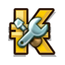
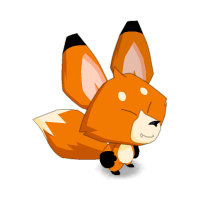
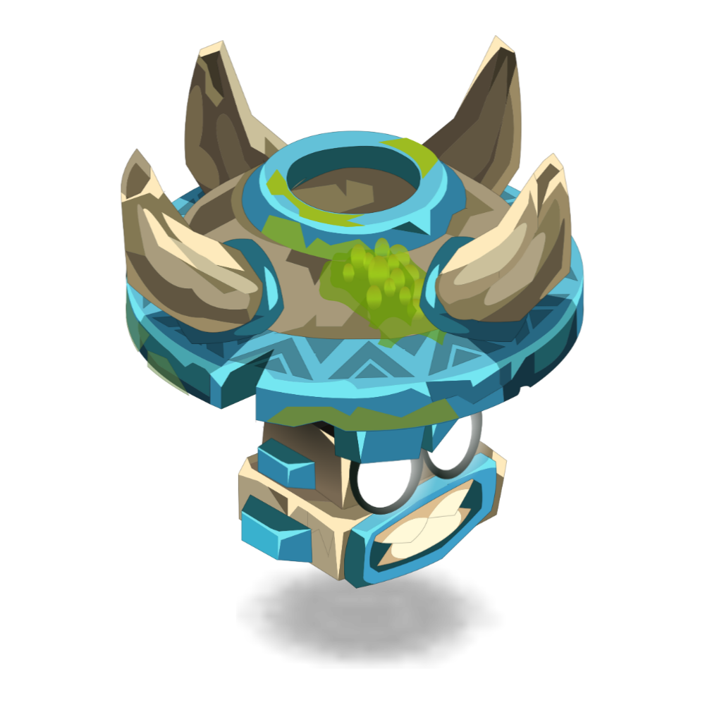

Outils pour Dofus
Une collection d'outils pour t'aider dans ton aventure.

Calculateur de Coût de Recette
Calcule le coût total des ressources nécessaires pour fabriquer un objet.

Calculateur d'xp pour familier
Optimise les coûts pour monter tes familiers en trouvant les ressources les plus rentables.
Calculateur de Taux de Butin
Estime tes chances d'obtenir des objets en fonction de ta prospection et bonus.
Calculateur d'XP de Personnage
Calcule l'XP et le temps nécessaire pour ton personnage.
Outil à venir...
Un nouvel outil sera bientôt disponible ici.

Indisponible